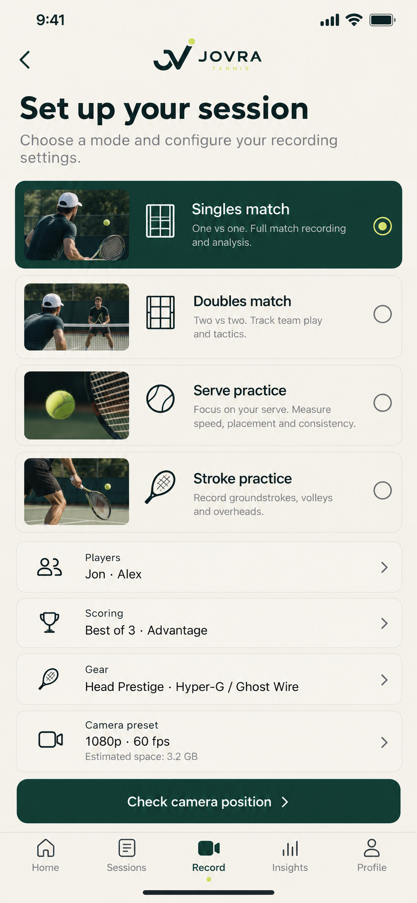
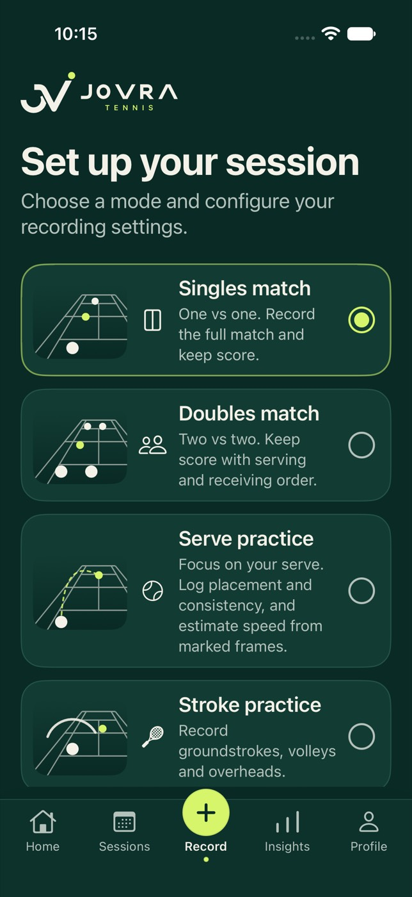
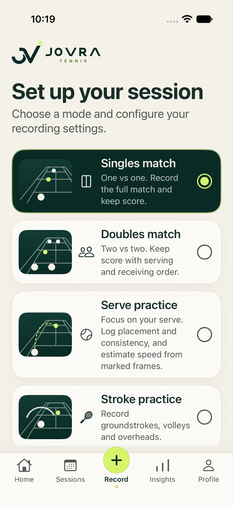

References are AI-generated rasters: they guide layout, rhythm, palette and hierarchy; the written spec wins.

Reviewer: Claude (T21 agent) — matches at AX5 as the spec asks: art and symbols step aside and the description wraps without clipping (the capture is mid-scroll, on Serve practice, because the audit had scrolled the page). Deviation: one mode per screen at this size, by design; the radio here predates the final commit, which caps its growth at 34 pt.

Reviewer: Claude (T21 agent) — matches in dark: forest page, the selected mode marked by a fuller fill, a 2 pt chartreuse edge and a filled radio, so the state never rests on colour alone. Same documented deviations as light.

Reviewer: Claude (T21 agent) — matches the reference's structure: lockup, "Set up your session" and its subtitle, four mode rows with Singles selected as a forest card with a chartreuse radio, each with art, a symbol, title and description. Documented deviations: vector ModeArt instead of photographs, no back chevron (tab root), the spec's mode descriptions (no "analysis", "tactics" or measured speed), and the rows, pre-flight strip and "Check camera position" sit below the fold (screenshot t21-light-setup-lower).